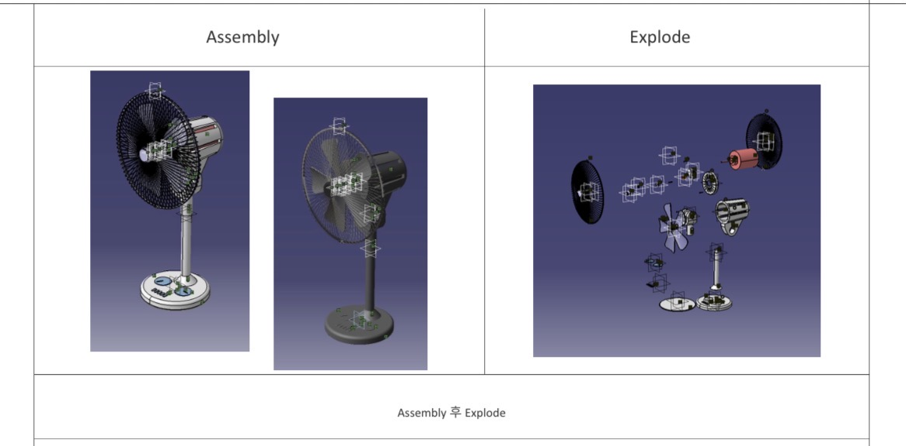

← 이전 목록으로 돌아가기
CATIA 선풍기 분해 설계 프로젝트
팀 과제 · 한서대학교

선풍기를 직접 분해하여 각 부품을 CATIA로 파트 디자인하고 최종적으로 조립까지
진행하는 팀 프로젝트였습니다. 원래 Shaft와 Blade 파트를 담당했습니다.
과정
프로젝트 도중 팀원 사정으로 Motor와 Fan Cover 파트까지 추가로 담당하게
되었습니다. Motor는 상대적으로 구조가 단순해 금방 끝났지만, Fan Cover 는 예상보다
형상이 복잡해 작업 시간이 오래 걸렸고, 이로 인해 원래 담당하던 Shaft·Blade 작업
진행에도 영향을 미쳤습니다. 발표 직전 Assemble 과정에서 수치 오차를 발견했고,
긴박한 상황 속에서도 문제를 찾아내어 프로젝트를 성공적으로 완수했습니다.
배운 점
복잡한 설계 작업을 진행하며 정밀한 수치 관리와 조립 검증의 중요성을 체감했습니다.
이 경험은 이후 업무 범위와 우선순위를 객관적으로 판단하고 체계적으로 관리하는
습관을 기르는 계기가 되었습니다.
담당 역할: Shaft, Blade, Motor, Fan Cover 파트 설계 및 전체 조립(Assemble) 검증